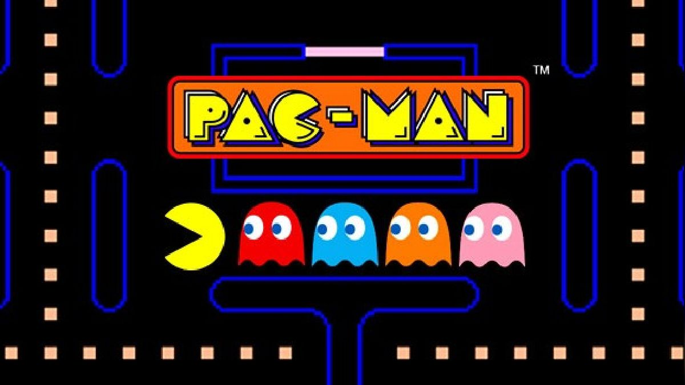
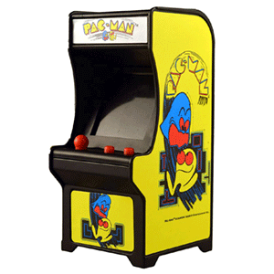
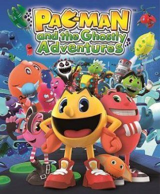
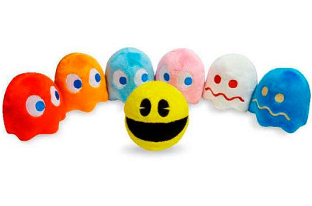

Inicio
Pac-Main un videojuego arcade creado por el diseñador de videojuegos Toru Iwatani de la empresa Namco,3 y distribuido por Midway Games al mercado estadounidense a principios de los años 1980.
La leyenda cuenta que a fines de los años 70’, Tohru Iwatani, diseñador de Namco, empresa japonesa de software en el campo de los videojuegos, salió una noche a comer pizza en compañía de algunos amigos. Luego de coger el primer trozo y mirar la forma que quedaba (un círculo al que le faltaba una parte, por lo que parecía tener una boca) tuvo un súbito momento de inspiración para crear un nuevo juego. Había nacido el famoso Pac man, el videojuego más famoso de todos los tiempos. Luego de un año y medio de trabajo, Iwatani, junto a su grupo de colaboradores, terminaron de desarrollar el juego. El protagonista, Pac-Man, un círculo amarillo al que le faltaba un sector, por lo que parecía tener una boca, aparecía en un laberinto donde debía comer puntos pequeños, mayores y otros premios en forma de frutas y otros objetos. El propósito del Pac-Man era comerse todos los puntos de la pantalla para pasar al siguiente nivel o pantalla (el juego original tiene 255 niveles). Sin embargo, el Pac-Man debía sortear la presencia de cuatro peligrosos fantasmas de colores que no sólo se movían más rápido que el jugador sino que también intentaban atraparlo.
Origen de Pac-Man
Pac-Man fue lanzado el 22 de mayo de 1980,creado por el diseñador de videojuegos japonés Toru Iwatani. Se convirtió en un fenómeno mundial en la industria de los videojuegos, llegó a tener el récord Guiness del videojuego de arcade más exitoso de todos los tiempos con un total de 293 822 máquinas vendidas desde 1981 hasta 1987 y acabó con el dominio de Space Invaders, donde la acción predominante era shoot 'em up (disparar a todos) para reemplazarla por un formato único, más humorístico y poco violento que gustó a muchísimas personas. "Todos los juegos que estaban disponibles en ese entonces -fines de los 70- eran de tipo violento, de guerra o como el Space Invaders", recordó en una entrevista Iwatani, agregando que "no había juegos que todos pudieran disfrutar, y especialmente no había ninguno para mujeres. Quería hacer un juego 'cómico' que las mujeres pudiesen disfrutar".

El personaje principal del juego es Pac-Man, una bola amarilla con una boca que se mueve por un laberinto comiendo puntos y evitando a los fantasmas que lo persiguen.
| Color del fantasma | Puck Man | Pac-Man | ||||||
|---|---|---|---|---|---|---|---|---|
| Personaje | Traducción | Apodo | Tipo | Personaje alternativo |
Apodo alternativo |
Personaje | Apodo | |
| Rojo | Oikake (追いかけ) | Cazador | Akabei (赤ベイ) | Tipo rojo | Urchin | Macky | Shadow | Blinky |
| Rosa | Machibuse (待ち伏せ) | Emboscador | Pinky (ピンキー) | Tipo rosa | Romp | Micky | Speedy | Pinky |
| Cian | Kimagure (気まぐれ) | Caprichoso | Aosuke (青助) | Tipo azul | Stylist | Mucky | Bashful | Inky |
| Naranja | Otoboke (お惚け) | Bobo | Guzuta (愚図た) | Tipo naranja | Crybaby | Mocky | Pokey | Clyde |
Modo de Juego
Hay un «pasillo» a los costados del laberinto que permiten a Pac- Man o sus enemigos transportarse al costado opuesto (sale por la derecha y reingresa por la izquierda, o viceversa). Cuatro puntos más grandes de lo normal situados cerca de las esquinas del laberinto nombrados en inglés Power Pellets (que en español lo han traducido en diversas formas como «píldoras mágicas» o «de poder», «bolas de energía» o simplemente «punto de poder»), proporcionan a Pac-Man, durante un tiempo limitado, la habilidad de comerse él a los monstruos (todos ellos se vuelven azules mientras Pac-Man tiene esa habilidad), tras lo cual todo vuelve a ser como al principio. Después de haber sido «comidos» por Pac-Man, los fantasmas se regeneran en «casa» (una caja situada en el centro del laberinto). El tiempo en que los monstruos permanecen vulnerables varía según la pantalla, pero tiende a decrecer a medida que progresa el juego, y al cabo de muchas pantallas los puntos especiales no tienen ningún efecto sobre los fantasmas, con la excepción del nivel 6 en el que el efecto dura unos segundos más que en el 5. Hay unos descansos entre algunas pantallas (entre la 2 y la 3, 5 y 6, 9 y 10 y posteriormente cada cuatro pantallas) en que se ven escenas humorísticas sobre Pac-Man y los fantasmas. Aparte de comer los puntos, Pac-Man puede obtener puntuación adicional si se come alguno de los objetos que aparecen dos veces por pantalla justo debajo de la caja en el centro del laberinto de donde salen los monstruos. El objeto cambia cada pantalla o dos, y su valor en puntos aumenta, de forma que dos cerezas (el premio de la primera pantalla) valen 100 puntos, mientras que el último objeto, la llave, vale 5000.
Premios
A lo largo del juego, Pac-Man puede encontrar diversos premios: Nivel 1: Cereza 100 puntos. Nivel 2: Fresa 300 puntos. Niveles 3 y 4 Naranja 500 puntos. Niveles 5 y 6 Manzana 700 puntos. Niveles 7 y 8 Uvas 1000 puntos. Niveles 9 y 10 Galaxian 2000 puntos. Niveles 11 y 12 Campana 3000 puntos. Niveles 13 al 255 Llave 5000 puntos. En cada nivel aparecen dos veces los premios. Si Pac-Man pierde una vida cuando aparece un premio, este desaparece a la vida siguiente.
El juego ha sido adaptado a numerosas plataformas y ha inspirado todo tipo de productos, desde dibujos animados hasta muñecos de peluche.
  